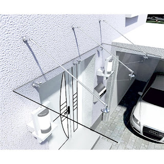

Kian berkembangnya dunia pembangunan, maka hadir banyak material penambah yang melengkapi estetika sebuah banguanan. Fungsi utama kaca merupakan sebagai pencahayaan natural dan juga sebagai komponen dari keindahan bangunan. Berikut sedikit penjelasan yang dapat anda baca mengenai sebagai acuan and ajika akan membangun rumah maupun daerah usaha.
Tak cuma kaca, sekarang juga telah hadir material pendukung bagi bangunan yang sedang banyak di bangun adalah material parket lantai kayu jati.
Jual Kaca Cermin di Semarang
Kaca cermin tak hanya berfungsi untuk bercermin saja tetapi juga sebagai pemanis ruangan. Kaca cermin juga dibuat untuk yang lain seperti pintu. Anda bisa mempunyai pintu dengan bahan berupa kaca cermin Semarang. Sekarang, cermin tidak hanya berbentuk persegi atau persegi panjang saja. Malahan, ada juga desain kaca cermin Semarang yang unik. Malahan juga komponen tepi. Kini perlu dilihat juga yaitu apakah Anda mau mempunyai kaca cermin Semarang desain minimalis atau yang elegan. Cermin minimalis memiliki siku.
Bila sebagai bahan untuk pintu kaca, kaca cermin Semarang ini juga masih diaplikasikan sebagai aksesoris cermin. Dan bahan yang dipakai untuk membikin bingkai bahkan berbeda-beda. Ada yang terbuat dari plastik, kayu, dan aluminum. Anda bisa menambahkan bingkai atau tanpa pigura cocok dengan kesukaan Anda. Harga yang terjangkau dan mutu terbaik ialah ciri khas dari dis.or.id. Dis.or.id menyediakan kaca tempered Semarang yang dapat anda beli dengan harga yang betul-betul murah dan dengan kualitas terbaik. Tetapi kunjungi dis.or.id untuk mendapatkan penawaran menarik. Disana anda dapat mendapatkan kaca cermin Semarang yang sesuai dengan keinginan anda.
Info Pemesanan Selengkapnya
Google Maps: https://www.google.com/maps/d/u/0/viewer?mid=1HNPQwTg5M-VmcXHvNbVncTuxY7ALbdIQ&ll=-7.27380280025364%2C112.65243155000007&z=18
Note: https://www.facebook.com/notes/distributor-of-industrial-supply/pabrik-supplier-kaca-cermin/1785720801727799/
Event: https://www.facebook.com/events/135275393812568/
Distributor & Supplier Pintu Kaca
Kini sudah hadir ratusan pintu kaca dengan desain yang berbeda-beda yang bisa di buat dan di pesan, entah itu pintu kaca frameless (tanpa bingkai) atau pintu kaca dengan frame. Ada juga pintu kaca dengan frame dengan desain yang berbeda seperti folding dan sliding. sebagian tipe kaca yang paling sering diterapkan untuk membikin pintu kaca, mulai dari variasi kaca tempered sampai kaca non-tempered. Dalam hal ini, terdapat sebagian tipe kaca dengan kualitas yang terbaik.
Anda dapat memiliki pintu kaca unggulan anda sekarang juga dengan mengunjungi dis.or.id. Disana terdapat berjenis-jenis tipe pintu kaca yang dapat anda jadikan alternatif.
Dis.or.id juga menyiapkan sebagian tipe kaca dengan ketebalan yang berbeda. Dis.or.id memiliki daya yang sudah betul-betul profesional di bidang ini.
Jasa Pemasangan Railing Kaca

Maka dari itu, komponen-bagian tangga tak lagi dijadikan dengan bahan kayu. Pun aksesoris seperti pada pegangan tangga malahan tak terbuat dari bahan kayu lagi namun kaca dan aluminum. Dalam hal kaca, Anda bisa memilih kaca tempered. Maka dari itu, para produsen berupaya untuk menciptakan railing yang terbuat dari kaca dengan model yang berbeda-beda. Tak kaca ini pecah, pecahannya halus sehingga tidak akan melukai orang. Namun kaca pecah, kaca tempered tidak akan melukai orang yang terkena kaca tempered tersebut lantaran pecahan semacam itu kecil dan lembut, tak berupa kepingan yang runcing.
Tidak ini tidak hanya ditentukan oleh ketebalan atau harga namun juga oleh jenis. Ada kaca tempered yang sekarang diminati banyak orang. Jika mendukung keamanan, railing kaca ini juga akan mempercantik desain interior rumah Anda. Dengan demikian, pecahan kaca tempered tidak akan melukai orang yang terkena pecahan. Pecahannya sungguh-sungguh kecil dan lembut sehingga tidak akan melukai siapapun yang terkena pecahan. Kini pasti, railing kaca ini menjadi opsi yang pas.
Distributor, Supplier & Jasa Pasang Kanopi Kaca
Atap kaca skylight banyak diaplikasikan pada rumah, gedung, kantor, café yang mengusung gaya modern untuk membikin efek cahaya yang dramatis pada ruangan bagian bawahnya serta memberi kesan modern pada bangunan. Atap kaca skylight ditujukkan untuk mendapatkan cahaya alami UV yang mempunyai fungsi sebagai penerangan dalam sebuah ruang. Jadi sudah tidak heran lagi seluruh orang ingin mencari harga yang sungguh-sungguh kompetitif untuk menyesuaikan budget atau anggaran mereka masing – masing untuk membuat produk canopy kaca. Jikalau tembus pandang, kaca mengabsorpsi sinar yang masuk sehingga kian tebal kaca maka semakin sedikit cahaya yang dapat melewatinya, maka sifat transparannya makin berkurang. Pada atap akrilik, perembesan cahaya yang terjadi demikian kecil sehingga walaupun ketebalannya bertambah, sifat transparannya tidak banyak berubah.
Kini anda bisa mendapatkan kanopi kaca dengan mutu terbaik dan juga bermutu di dis.or.id. Disana anda bisa mendapatkan atap kanopi kaca dengan mutu terbaik dan harga relatif murah. Anda juga dapat memenfaatkan jasa pemasangan atap kanopi kaca dengan segala macam kaca yang anda butuhkan yang pantas dengan kriteria atap kanopi. Banyak bangunan seperti gedung perkantoran, perumahan, ruko dan apartement yang mengaplikasikan kanopi kaca tempered. Seandainya fungsi utama kanopi sebagai pelindung untuk bangunan tersebut, pemasangan kanopi kaca juga dapat membuat bangunan menjadi kelihatan lebih indah dan menarik, apalagi menerapkan konsep yang sama dengan konsep rumah minimalis. Sesudah kaca untuk atap kanopi cukup digemari.
Distributor & Supplier Kaca Shower
Kaca shower adalah kotak atau alat yang berfungsi sebagai penyekat ruang khusus untuk kamar mandi. Jika akan memberikan kesan lapang dikala berada di kamar mandi, mandi dengan shower akan memberikan kesegaran tersendiri dibanding kamar mandi dengan bak mandi. Tidak ingin lebih total lagi, kamar mandi yang memakai shower ini dapat dilengkapi dengan komponen lain adalah shower screen atau dapat disebut dengan kaca shower. Shower screen yakni kotak atau alat yang berfungsi sebagai penyekat ruang khusus untuk kamar mandi. Ada beberapa alasan mengapa Pintu Kaca Shower banyak dipakai salah satunya adalah kaca lebih menonjol bersih dan rapi dan juga lebih gampang dalam perawatannya. Kelebihan shower screen dibanding dengan cara penyekatan yang lain yakni dijadikan dalam wujud yang telah jadi dan tinggal dipasang saja. Kita tak perlu repot lagi mencari tukang sendiri karena pemasangan alat sekat ini memang memerlukan teknik tersendiri.
Tak anda memerlukan kaca shower anda dapat mengunjungi seketika dis.or.id. Disana anda dapat mendapatkan kaca shower yang bermutu dan harga yang juga terjangkau.
Distributor, Supplier & Jasa Pasang Kanopi Kaca

Kanopi kaca kian banyak diminati karena sekarang telah banyak bangunan yang memakai bahan kaca untuk lebih mempercantik tampilan rumah. Seiring dengan perkembangan zaman di dunia properti, sekarang kanopi kaca terlah berkembang kencang meniru arsitektur modern . Atap kaca skylight ditujukkan untuk menerima sinar natural UV yang memiliki fungsi sebagai penerangan dalam sebuah ruang. Disinilah letak perbedaan optis yang utama antara akrilik (acrylic) dengan kaca. Seandainya tembus pandang, kaca mengabsorpsi sinar yang masuk sehingga semakin tebal kaca maka semakin sedikit cahaya yang dapat melewatinya, karenanya sifat transparannya makin berkurang.|Di samping pintu kaca shower akan membikin kamar mandi kecil terlihat lebih besar.
Tidak anda dikala ini sedang memerlukan kanopi kaca, anda dapat lantas mengunjungi dis.or.id. Disana anda bisa menerima atap kanopi kaca dengan kualitas terbaik dan harga terjangkau. Dis.or.id juga menyediakan jasa pemasangan kanopi kaca yang tentunya dengan bantuan daya professional yang sudah berpengalaman. Banyak bangunan seperti gedung perkantoran, perumahan, ruko dan apartement yang menerapkan kanopi kaca tempered. Seandainya fungsi utama kanopi sebagai pelindung untuk bangunan tersebut, pemasangan kanopi kaca juga bisa membikin bangunan menjadi tampak lebih indah dan menarik, apalagi menggunakan konsep yang sama dengan konsep rumah minimalis. Setelah kaca untuk atap kanopi cukup digemari.
Jasa Maintenance Kaca
Jasa maintenance kaca telah menjadi pilihan tepat jikalau Anda berharap melakukan perawatan gedung yang terbuat dari kaca. Dengan kian berjalan nya waktu tentu gedung yang memiliki bahan kaca pada sisinya memerlukan perawatn khusus agar tetap awet dan bendung lama. Jasa maimtenence kaca menyediakan layanan pembersihan kaca gedung serta koreksi kaca gedung yang rusak, pecah dan tak layak lagi untuk di pakai. Kaca benar-benar membutuhkan perawatan karena tiap-tiap hari terkena sinar sang surya atau juga hujan. Berbagai, kaca akan nampak kusam karena sudah lama tidak dibersihkan. Dis.or.id mempunyai kekuatan ahli yang dapat cakap membersihkan gedung pencakar langit yang bangunannya terbuat dari kaca. Daya yang di pakai untuk jasa maintenance kaca diantaranya godole, rope access, crane, dan scaffolding.
Kini juga hadir maintenance kaca untuk membersihkan kaca berbentuk melengkung.
Dis.or.id memahami semakin banyak gedung pencakar langit dengan betuk yang berbeda-beda. Disana anda bisa memanfaatkan jasa maintenance kaca dengan tenaga spesialis yang cakap membersihkan gedung kaca dengan produk pembersih kaca apa yang terbaik untuk menghilangkan kotoran dan kusam. Dis.or.id memiliki semua daya ahli yang di rekrut cuma mereka yang profesional yang tahu persis bagaimana sistem mengaplikasikan alat dan bagaimana membersihkan kaca gedung bertingkat.
Jasa Pemasangan Kaca Tempered

Jasa pemasangan kaca tempered menawarkan solusi bagi Anda memiliki budget yang terbatas melainkan ingin memiliki properti, entah itu gedung perkantoran, warung, atau rumah hunian yang menggunakan kaca tempered. Selain hanya melakukan pemasangan kaca tempered untuk gedung perkantoran, namun juga untuk rumah hunian. Dengan progres pendinginan yang cepat membikin kaca mempunyai kelenturan dan kekuatan yang baik terhadap tekanan di kedua sisi permukaan kaca. Banyak komponen properti yang dapat dihasilkan dengan bahan berupa kaca tempered. Kini, kian banyak properti yang menerapkan kaca tempered. Kecuali ini tak lain sebab semakin banyak orang yang memahami kualitas serta keunggulan dari kaca tempered ini.
Kalau itu, bermacam-macam bagian properti akan semakin menarik kalau diwujudkan dari kaca tempered seperti kanopi, pintu, kamar mandi, dan balkon.
Untuk itu, dis.or.id hadir sebagai penyedia jasa pemasangan kaca tempered yang sudah berpengalaman. Tak ketika ini anda sedang berkeinginan membangun suatu bangunan atau gedung, anda dapat memanfaatkan kaca tempered untuk diaplikasikan lantas ke semua ragam bidang. Bila aman kaca tempered juga mampu memberikan kesan keindahan yang sungguh-sungguh bagus diperbandingkan dengan kata tipe lainnya. Lebih dari itu, dis.or.id sudah menyiapkan energi ahli yang siap untuk melakukan pemasangan, entah itu kaca tempered untuk kanopi, pintu, partisi, balkon, dan lain sebagainya. Harga yang ditawarkan untuk pemasangan kaca tempered benar-benar murah.
Distributor & Supplier Pintu Lipat Kaca
Kaca tempered juga dapat diaplikasikan untuk pintu lipat kaca. Jadi, bahan ini tak cuma untuk pintu saja. Secara biasa, kaca dibagi menjadi 6 macam, yakni kaca bening, kacang berwarna atau tinted glass, kaca es, kaca cermin atau one way glass, kaca laminasi, dan yang terakhir kaca tempered. Apalagi jika taman Anda terbuka sehingga pencahayaan natural masuk. Maka, sinar itupun akan masuk ke dalam ruang makan sebab penyekatnya terbuat dari pintu kaca transparan.
Harga pintu kaca lipat frameless ini betul-betul dipengaruhi oleh ukuran lebar dan tingginya pintu. Dengan demikian, cahaya matahari di siang hari bisa masuk ke dalam ruangan. Dan dengan adanya pintu kaca ini, keamanan kian bagus. Kini, banyak kantor yang tidak lagi mempunyai ruangan yang disekat dengan tembok dan dikala ini beralih dengan ruangan disekat dengan menerapkan kaca. Jadi, bukan hanya pintu saja yang berupa kaca, tetapi juga seluruh sekat ruangan.
Jasa Pemasangan Kubikel Toilet

Bila anda mengininkan kamar mandi yang layaknya mall maupun hotel, ada pantasnya anda memakai kubikel kamar mandi. Banyak profit yang bisa didapat dengan menggunakan kubikel toilet seperti bisa membuat kamar kecil menonjol lebih bersih dan juga hanya memerlukan sedikit space.
Jikalau anda berminta untuk membeli kubikel kaca, anda bisa mengunjungi dis.or.id. Kamar kubikel juga memberikan hal yang efisien dan tepat sasaran dalam pembagian space kamar mandi yang kecil.
Keuntungan dari sekat kaca memberikan yakni dapat memberikan efek luas karena ruangan tersekat tapi secara visual tidak.
Melainkan penerapan kaca di kamar mandi dapat jadi problem saat Anda meletakkannya dengan salah. Justru embun dapat merekat di kaca dan lambat laun dapat membuat kaca tidak sejernih semula. Jika anda dikala ini sedang membutuhkan kaca shower untuk kamar mandi, seketika saja kunjungi dis.or.id untuk melakukakn pemesanan ataupun menanyakan detil harga dari kaca shower. Kaca shower yang di jual di jamin kaca shower yang mempunyai mutu terbaik dan berkualitas tinggi.
Distributor & Supplier Partisi Kaca

Partisi kaca kini tak di perkantoran modern atau perbelanjaan. Banyak rumah hunian yang sekatnya terbuat dari kaca. Biaya ini disebabkan banyak keunggulan dari partisi modern ini. memang biaya pembuatan partisi ini jauh lebih murah. yang satu ini tergantung lama progres. Berbeda jika Anda memilih partisi kaca. Kwalitas, untuk space yang tak begitu luas, Anda menyekat menjadi sebagian ruangan dengan partisi ini tanpa merasa ruangan menjadi sungguh-sungguh sempit. Anda dapat mereka. Selain, Anda harus tahu ada desain yang berbeda. Ada partisi kaca frameless atau tanpa pigura dan partisi dengan pigura. Karena juga dengan ragam kaca. kaca ini menetapkan privacy ruangan yang disekat. Ada kaca transparan, semi transparan, dan juga kaca cemin yang ruangan benar-benar privat. Sekiranya anda sedang mencari distributor dan supplier partisi kaca yang mempunyai kaca dengan terbaik, anda tinggal mengunjungi dis.or.id.